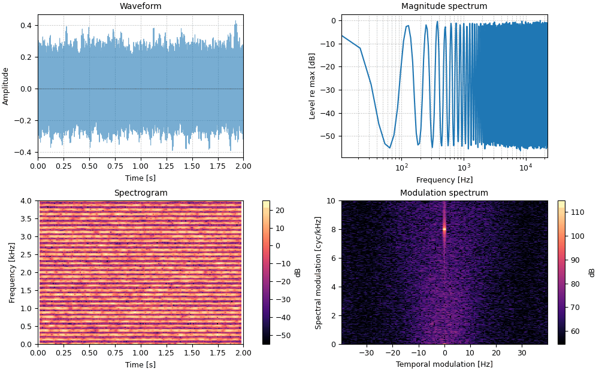

47 sounds made with sonore, each beside plots of
the same audio you hear.
Press play and a line follows the sound across every time axis in its plots. Click any time
axis to play from that point. The audio is lossless, since compression would alter the binaural sounds.
Start with your volume low.
Spectrotemporal ripples
Each ripple is a sinusoidal pattern in time and log-frequency: a rate in Hz and a density in cycles per octave. The top-left panel is the pattern as specified; the others are measured from the sound itself.
Downward ripple
Rate 4 Hz, density 1 cycle/octave, on log-spaced tones. Listen for a continuous downward sweep, four times a second. The diagonal bands in the cochleagram are what you are hearing; the waveform alone shows almost none of it.
01_downward_ripple.flac, 3.0 s, mono
Upward ripple
The same ripple at −4 Hz, so the sweep rises. Its modulation-spectrum peak moves to negative rate.
02_upward_ripple.flac, 3.0 s, mono
Two ripples at once
4 Hz at 1 cycle/octave plus −12 Hz at 2.5 cycles/octave: two motions in opposite directions, superimposed. The modulation spectrum separates them into two clean peaks.
03_two_ripples_at_once.flac, 3.0 s, mono
Same ripple, harmonic carrier
The first ripple on harmonics of 60 Hz. The motion is the same, now over a low pitch; resolved low harmonics show as horizontal lines in the cochleagram.
04_same_ripple_harmonic_carrier.flac, 3.0 s, mono
Same ripple, noise carrier
The same pattern on narrowband noise, which brings its own random fluctuations, so the sweep sounds rougher.
05_same_ripple_noise_carrier.flac, 3.0 s, mono
Dynamic moving ripple
Rate and density wander randomly (rates within ±40 Hz at the lowest frequency). Where the density passes through zero, every band pulses together, and only there does the waveform show the modulation.
06_dynamic_moving_ripple.flac, 4.0 s, mono
Binaural
These need headphones. Over speakers the two ears' signals mix in the room and the effects disappear.
Oscor
Headphones
Interaural correlation swings between +1 and −1 three times a second. The image in your head alternates between focused and diffuse; only the correlation panel shows what changes.
07_oscor.flac, 4.0 s, stereo
Phasewarp
Headphones
The interaural phase of every component rotates through 360° twice a second, so the zero-lag correlation follows a 2 Hz cosine.
08_phasewarp.flac, 4.0 s, stereo
Timing alone
Headphones
Noise with a 500 µs interaural time difference, leading in the left ear and then in the right. The level difference is zero throughout; the sideways shift comes from timing.
10_timing_alone.flac, 1.9 s, stereo
Pitch from delay
Iterated rippled noise
Noise added to an 8 ms delayed copy of itself, sixteen times over. A 125 Hz pitch rises out of the hiss; the spectrum ripples at multiples of 125 Hz and the modulation spectrum peaks at 8 cycles/kHz, the delay in milliseconds.
09_iterated_rippled_noise.flac, 2.0 s, mono

Filterbanks
Cosine filterbanks whose squared responses sum to 1, so analysis followed by synthesis is exact.
Perfect reconstruction
An exponential sweep split into 6 ERB-spaced bands plus the lowpass and highpass edge filters, then summed back. What you hear is the reconstruction; it differs from the original only at the level of floating-point rounding.
26_perfect_reconstruction.flac, 2.0 s, mono
Speech in noise
Time-frequency masking: the STFT is invertible, so a masked spectrogram is a sound.
Target in noise
A gliding harmonic target (a stand-in for a voice) in pink noise at −5 dB SNR.
24_target_in_noise.flac, 2.0 s, mono
Ideal binary mask
The same mixture with every time-frequency cell where the noise dominates switched off. The mask is computed from the separate target and noise, which is what makes it ideal (Wang, 2005); the resynthesis is exact.
25_ideal_binary_mask.flac, 2.0 s, mono
Phase vocoder
The first sound is the reference; the others change its duration, pitch, or partials.
Reference
A 220 Hz harmonic complex with a 5 Hz, ±3% vibrato.
11_reference.flac, 2.0 s, mono
Twice as long
Same pitch, double duration. The vibrato slows to 2.5 Hz as well: time stretching stretches every temporal feature.
12_twice_as_long.flac, 4.0 s, mono
Up a fifth
Seven semitones higher, same duration, same 5 Hz vibrato.
13_up_a_fifth.flac, 2.0 s, mono
Partials shifted up 70 Hz
Oscillator-bank resynthesis with every partial moved up 70 Hz, to 290, 510, 730 Hz and on: still 220 Hz apart, but no longer harmonics of anything nearby, so the tone turns metallic and its pitch less certain.
14_partials_shifted_up_70_hz.flac, 2.0 s, mono
Partials shifted up 110 Hz
The same with half the spacing: 330, 550, 770 Hz are exactly the odd harmonics of 110 Hz. The result is harmonic again, a hollow, clarinet-like tone an octave below the reference.
14b_partials_shifted_up_110_hz.flac, 2.0 s, mono
Noise-vocoded
A syllabic 3 Hz harmonic sound through an 8-band noise vocoder: the rhythm remains and the pitch is gone. The original isn't played; it is shown for comparison.
15_noise-vocoded.flac, 2.0 s, mono
Rooms, natural and not
After Traer & McDermott (2016), who measured 271 real rooms and found their reverberation tightly constrained: an exponential decay, fastest at low and high frequencies. Synthetic rooms that break these regularities sound wrong. All rooms here have the same median RT60 (1 s) and direct-to-reverberant ratio (−3 dB); unlike the paper, they are not further equated for distortion, so some differences in loudness and length remain. Presented diotically, as in the paper.
Starter pistol, dry
The source for the room demos: a sharp, broadband crack lasting a fraction of a millisecond. Its cochleagram shows the filterbank's own response to a click: the filters are zero-phase, so they ring symmetrically before and after it (visible at this 60 dB range), whereas a real cochlea rings only afterwards.
16_starter_pistol_dry.flac, 0.1 s, mono
In a natural room
A synthetic room with RT60 = 1 s whose decay follows the statistics of 271 real rooms: exponential, with mid frequencies ringing longest. Listeners can't tell such IRs from real ones.
17_in_a_natural_room.flac, 1.4 s, mono
Time-reversed decay
The same decay run backwards: the reverberation swells up to the shot instead of dying away after it.
18_time-reversed_decay.flac, 1.4 s, mono
Linear decay, matched start
Starts at the natural level but falls linearly (in amplitude) rather than exponentially, with the same energy per band; it has to end early to do so.
19_linear_decay_matched_start.flac, 0.4 s, mono
Linear decay, matched end
Linear decay that reaches zero where the natural decay is 60 dB down, again with the same energy per band. On a dB scale the decay bows outward instead of falling in a straight line.
20_linear_decay_matched_end.flac, 1.4 s, mono
Inverted frequency dependence
Exponential, but low and high frequencies ring longest and the middle dies fastest, the reverse of real rooms. In the paper listeners often heard a separate high-frequency hiss rather than a room.
The profile of a room twice as reverberant, scaled down: more sharply peaked than real rooms of this size. The subtlest variant; in the paper it was detected with impulses but not with speech.
The profile of a room half as reverberant, scaled up: flatter than real rooms of this size. Also subtle.
23_reduced_frequency_dependence.flac, 1.3 s, mono
Sound textures
After McDermott & Simoncelli (2011): a texture is summarized by time-averaged statistics of a cochlear model, and a new sample is synthesized by imposing those statistics on noise. Each original is followed by its synthesis; the synthesis shares no waveform with the original, only statistics. Plots: spectrogram, long-term spectrum, and three of the model's own statistics: modulation power at each rate in each band (the model's modulation spectrum), envelope sparsity (variance / mean² of each band's envelope), and modulation power averaged over bands. For syntheses and ablations, the original is overlaid in dashed black. Recordings and excerpt choices: docs/textures/SOURCES.md. Synthesis takes about a minute per texture, so these are precomputed by tools/make_texture_synths.py.
Rain, original
Steady rain (nick121087, Freesound, CC0).
t00a_rain_original.flac, 7.0 s, mono
Rain, synthesized
Gaussian noise adjusted until its statistics match the original's. Average statistic SNR 36 dB after 28 iterations.
t00b_rain_synthesized.flac, 5.0 s, mono
Stream, original
Water burbling over rocks in a small creek (cognito perceptu, Freesound, CC0).
t01a_stream_original.flac, 7.0 s, mono
Stream, synthesized
Gaussian noise adjusted until its statistics match the original's. Average statistic SNR 37 dB after 30 iterations.
t01b_stream_synthesized.flac, 5.0 s, mono
Crickets, original
Crickets around midnight (sengjinn, Freesound, CC0).
t02a_crickets_original.flac, 7.0 s, mono
Crickets, synthesized
Gaussian noise adjusted until its statistics match the original's. Average statistic SNR 36 dB after 30 iterations.
t02b_crickets_synthesized.flac, 5.0 s, mono
Applause, original
About thirty people clapping (Breviceps, Freesound, CC0). Only 3.5 s of original.
t03a_applause_original.flac, 3.5 s, mono
Applause, synthesized
Gaussian noise adjusted until its statistics match the original's. Average statistic SNR 43 dB after 30 iterations.
t03b_applause_synthesized.flac, 5.0 s, mono
Fire, original
A small backyard fire: sparse pops over a low rumble (Sauron974, Freesound, CC0).
t04a_fire_original.flac, 20.0 s, mono
Fire, synthesized
Gaussian noise adjusted until its statistics match the original's. Average statistic SNR 21 dB after 29 iterations.
t04b_fire_synthesized.flac, 5.0 s, mono
Bubbling mud, original
Gas venting through a Yellowstone mud pot (NPS / Jennifer Jerrett, public domain).
t05a_bubbling_mud_original.flac, 20.0 s, mono
Bubbling mud, synthesized
Gaussian noise adjusted until its statistics match the original's. Average statistic SNR 38 dB after 29 iterations.
t05b_bubbling_mud_synthesized.flac, 5.0 s, mono
Wind and rain, original
A winter storm, wind with heavy rain (sonicwars, Freesound, CC0).
t06a_wind_and_rain_original.flac, 7.0 s, mono
Wind and rain, synthesized
Gaussian noise adjusted until its statistics match the original's. Average statistic SNR 39 dB after 30 iterations.
t06b_wind_and_rain_synthesized.flac, 5.0 s, mono
What the statistics do
The same textures synthesized with only some of the statistics imposed. Compare with the full syntheses above: the marginals alone give the right sparsity but not the right rhythm or the coordination across bands.
Applause, marginals only
Only the envelope marginals imposed (mean, variance, skew, kurtosis of each band's envelope).
u00_applause_marginals_only.flac, 5.0 s, mono
Applause, marginals and modulation power
Envelope marginals plus modulation power; no correlations across bands or modulation bands.